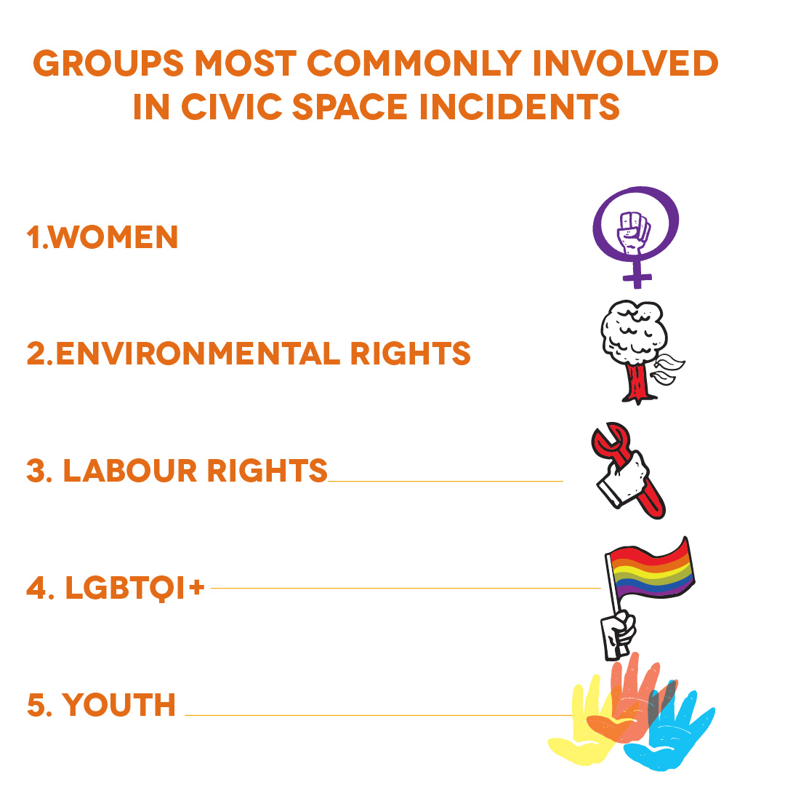

An Uneven Crisis
Women on the Frontline
Not everyone is evenly affected by civic space restrictions. Groups advocating for women’s rights and women HRDs (WHRDs) continue to be mentioned frequently in CIVICUS Monitor reports, featuring in 32 per cent of updates.
The documentation includes instances where women have been the target of violations, often gendered in nature. For example, in Malaysia, an environmental defender was threatened, including through a sexually explicit message over WhatsApp containing an indecent poster of her and her personal information. Similar intimidation tactics were used against women journalists in Lebanon and Serbia. In addition, women journalists are often the target of attacks while covering protests. While in detention, women often faced gender-based violence. In Egypt, freelance journalist Solafa Magdy was physically and sexually assaulted in police custody.
But women, despite the restrictions, often led major protests and continued to claim their rights. Over the past year, women’s rights were a major focus of protests, including protests against gender-based violence in Austria, Canada, Pakistan, Mali, Mexico and South Africa, and for the protection of reproductive rights, such as in Chile, Croatia, Dominican Republic, El Salvador, Poland and the USA. Women led protests for climate justice, including in Senegal, and in Afghanistan women protested to demand the right to work and education under the new Taliban-run government.
Globally, other groups regularly mentioned include LGBTQI+ people, labour rights groups, environmental rights groups and young people.
